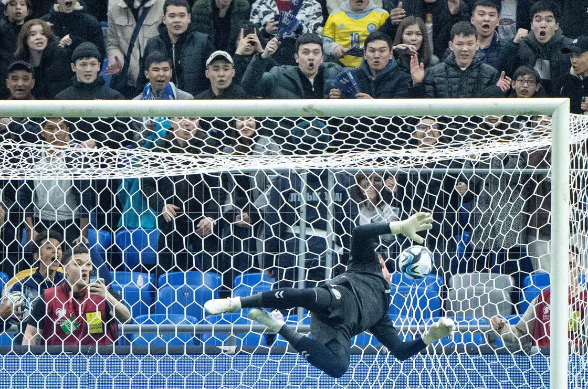
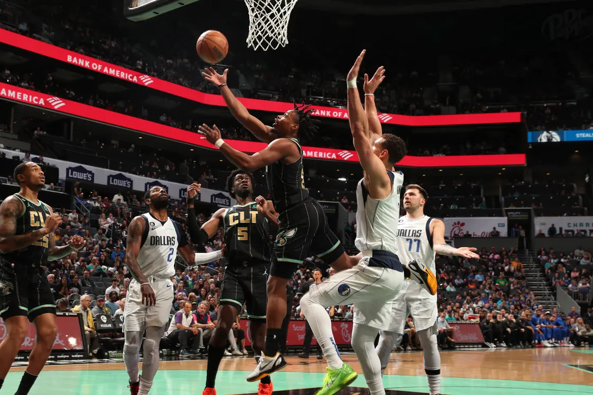
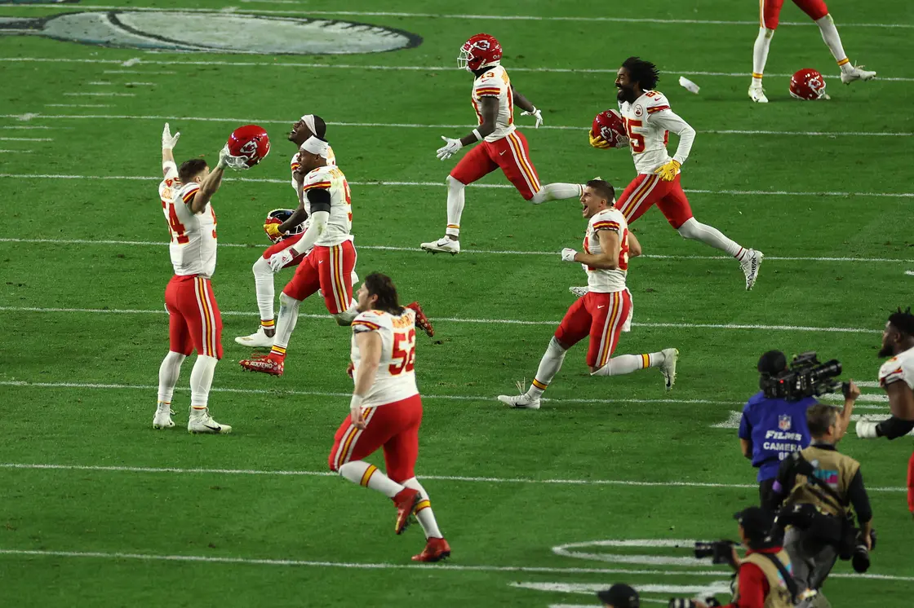
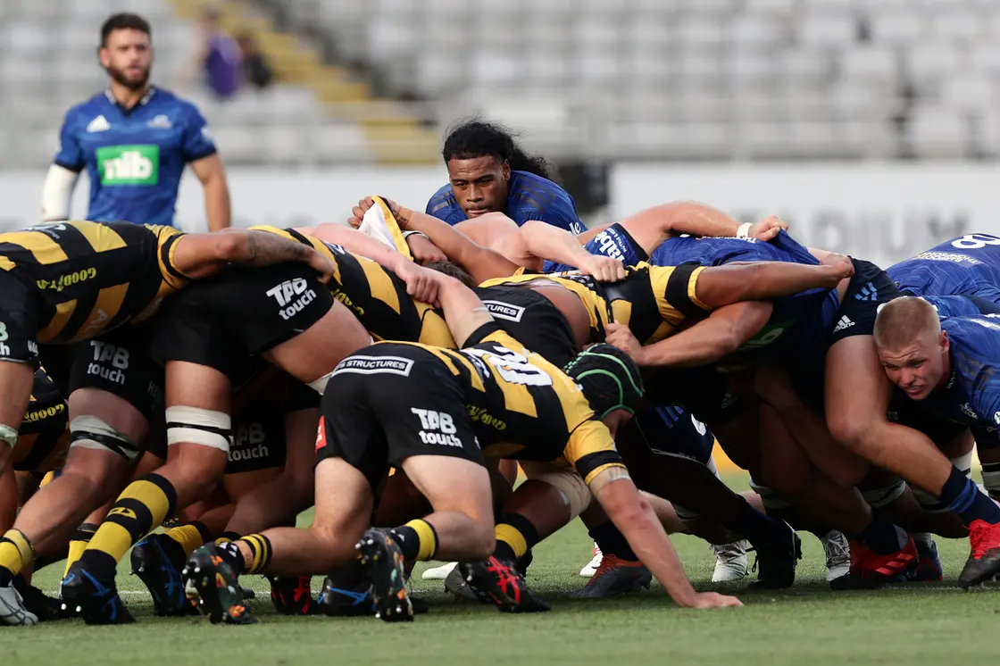
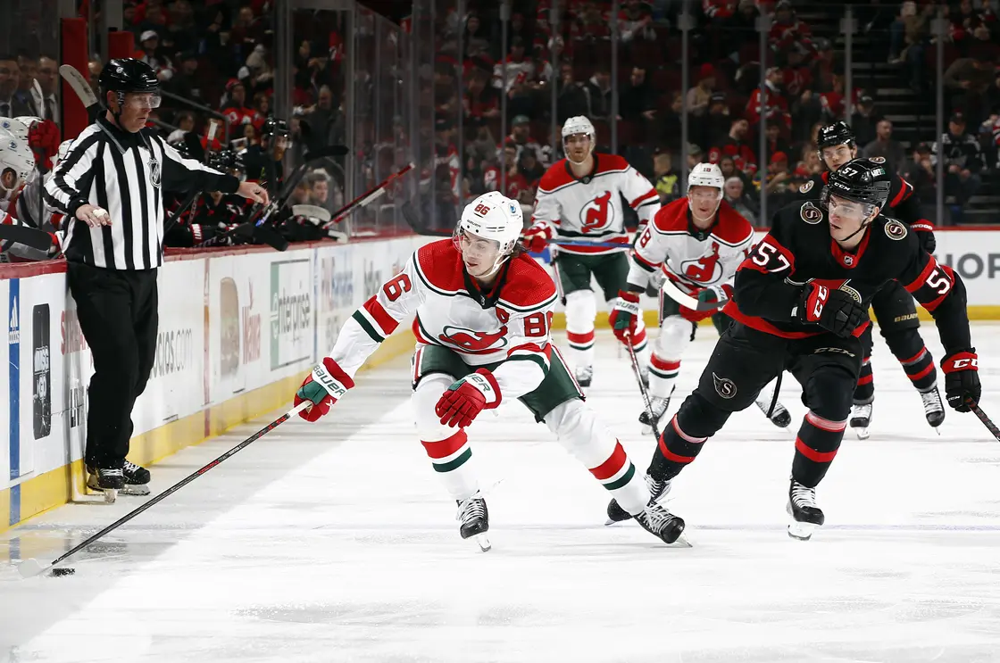
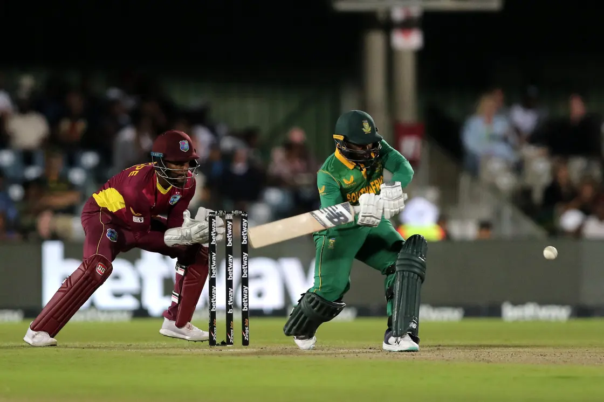
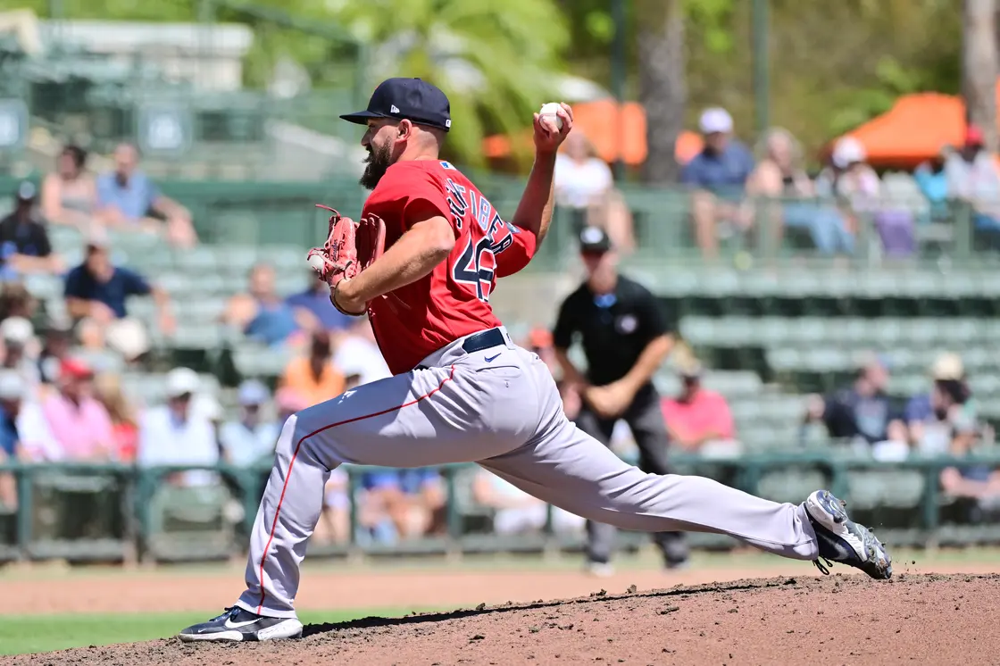
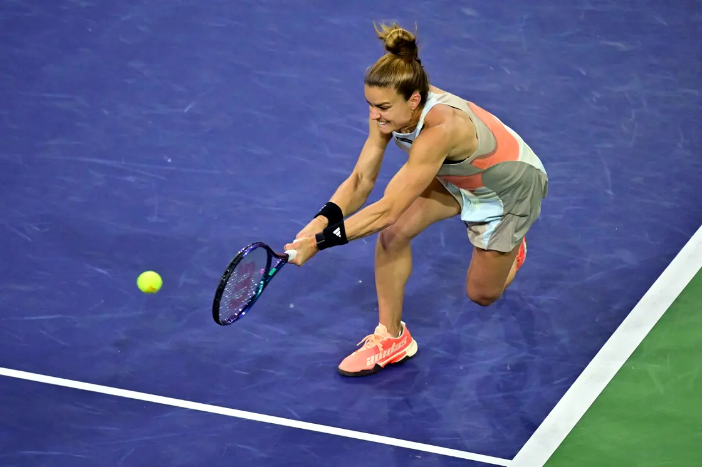
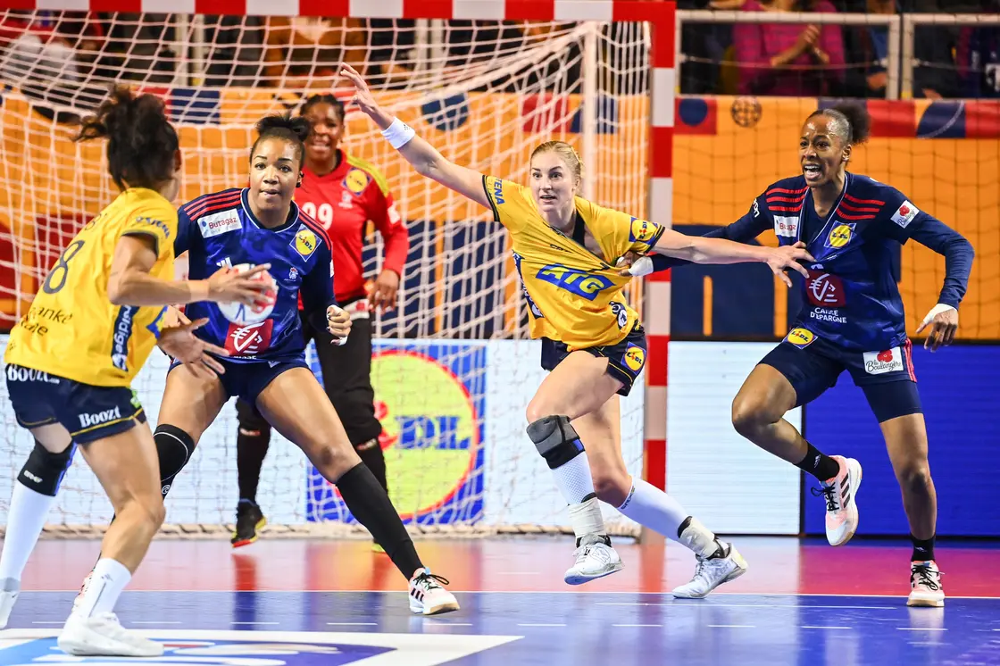

Sport has been an essential aspect of human history, and since its
invention, it has influenced people's lives in all times and eras.
Most sports are played by either throwing or hitting balls.
Nowadays, sports with balls, such as hockey, cricket, and soccer,
are the most famous, with millions of fans worldwide. Although some
games are played without balls, those that are, are the most known
and widely played. Sports play essential roles in society as it
helps to bring people together despite their races, nationalities,
and cultures.
A list of the top 10 sports with balls
Generally, in games, balls are caught, head-butted, thrown, hit,
kicked, bumped, spiked, dunked, driven, served, bowled, broken,
punted, volleyed, dribbled, or tossed by the players.Professional
athletes such as soccer players are among the world's wealthiest
individuals since they take home millions of dollars in salaries,
commercial agreements, and sponsorship deals. Here is a list of 15
sports with balls that are widely played all over the world.
Soccer
Soccer is the world's most popular sport, with over 4 billion
fans. Like most types of sports with balls in them, soccer is
also played by two opposing teams, each aiming to score a goal
using any part of the body except the hands and arms

Photo: Bo Amstrup Source: Getty Images
Basketball
The game has been one of the Olympic sports with balls since
1936. It is played by two opposing teams of 5 players who try
to score points by throwing the ball into the opponent's
basket while preventing them from gaining possession.

Photo: Kent Smith Source: Getty Images
American football
The sport is played between two opposing teams of 11 members
each. The teams try to score points by carrying or passing the
ball into the scoring area at the end zone. The team with the
most points wins at the end of the game.

Photo: Sarah Stier, Source: Getty Images
Rugby
Rugby is a sport that requires skill, speed, and strength
since it is a challenging game. It is played by two teams of
15 players who try to score points by either carrying the ball
toward the opponent's side or kicking it between the
opponent's upright poles.

Photo: Dave Rowlan, Source: Getty Images
Hockey
There are different types of hockey, such as field and ice
hockey, which involve using a stick and a ball during action.
It is played by two opposing teams of 11 individuals who
attempt to gain points by hitting it with a stick into the
opponent's goal.

Photo: Sarah Stier, Source: Getty Images
Cricket
Cricket is a game played by two opposing teams of 11 members
each and involves using a bat. The game aims to score more
points than the opponents during the competitions.

Richard Huggard,Source: Getty Images
Baseball
The sport is regarded as one of the world's most famous
sports, played by two opposing teams of nine members each. Its
primary objective is to score points by hitting a ball with a
bat and running all the bases to the home plate. After nine
innings, teams alternate from offence to defence

Photo: Julio Aguilar, Source: Getty Images
Tennis
Tennis became popular in France before spreading to other
parts of the world. Two teams play made up of either one or
two people who use rackets to hit the ball over the net to the
opponent's half.

Photo: Frederic J Brown, Source: Getty Images
Handball
As its name suggests, the game is played using hands. The
sport involves two opposing teams of seven members who try to
score points by manoeuvring other players and throwing the
ball into the opponent's net.

Photo: Anthony Dibon, Source: Getty Images
Volleyball
The sport was invented in 1895 by William J Morgan, an
employee of the Christian Young Men's Associations. The sport
then spread to Western Europe and North America and has
amassed over 900 million fans worldwide.
.png)